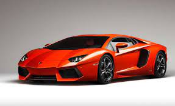
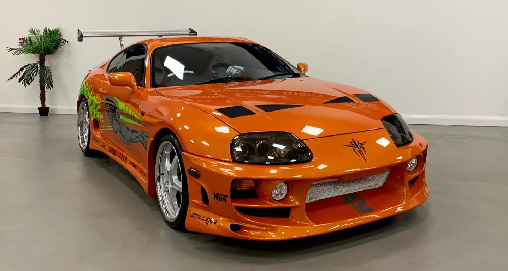

Lamborghini is an Italian luxury sports car manufacturer founded in 1963 by Ferruccio Lamborghini. The company's first production car was the 350 GT, introduced in 1964. Lamborghini is known for its powerful engines, sleek designs, and luxurious interiors. The company's cars are some of the most expensive cars in the world, and they are only available to a select few.
Lamborghini has a long and storied history. The company was founded by Ferruccio Lamborghini, who was a successful tractor manufacturer. Lamborghini was a Ferrari customer, but he was dissatisfied with the quality of his Ferraris. He decided to start his own car company to build better cars than Ferrari.
The Lamborghini Miura, introduced in 1966, was a revolutionary mid-engine sports car. The Miura was one of the fastest and most powerful cars of its day, and it helped to establish Lamborghini as a major player in the sports car market.
Lamborghini has gone through a number of ownership changes over the years. The company was purchased by Mimran Group in 1978, and then by Chrysler Corporation in 1987. In 1998, Audi AG purchased Lamborghini.
Under Audi ownership, Lamborghini has continued to produce high-performance sports cars. The company's most recent models include the Murciélago, Aventador, and Urus. The Urus is a luxury SUV, and it is the first SUV ever produced by Lamborghini.
Lamborghini is a highly respected car brand, and its cars are some of the most desirable in the world. The company's cars are known for their performance, luxury, and exclusivity. Lamborghini is a true icon of the automotive world.

The Toyota Supra is a sports car and grand tourer manufactured by the Toyota Motor Corporation beginning in 1978. The name "supra" is derived from the Latin prefix, meaning "above", "to surpass" or "go beyond".
The initial four generations of the Supra were produced from 1978 to 2002. The fifth generation has been produced since March 2019 and went on sale in May 2019. The styling of the original Supra was derived from the Toyota Celica, but it was both longer and wider. Starting in mid-1986, the A70 Supra became a separate model from the Celica.
The first generation of the Supra (A40/A50) was introduced in 1978 as a luxury sports coupe. It was powered by a 2.0-liter inline-six engine that produced 123 horsepower. The Supra was available with either a four-speed automatic or five-speed manual transmission.
The second generation of the Supra (A60) was introduced in 1981. It was powered by a 2.0-liter inline-six engine that produced 161 horsepower. The Supra was also available with a turbocharged version of the 2.0-liter engine that produced 197 horsepower.
The third generation of the Supra (A70) was introduced in 1986. It was powered by a 3.0-liter inline-six engine that produced 200 horsepower. The Supra was also available with a turbocharged version of the 3.0-liter engine that produced 276 horsepower.
The fourth generation of the Supra (A80) was introduced in 1993. It was powered by a 3.0-liter inline-six engine that produced 220 horsepower. The Supra was also available with a turbocharged version of the 3.0-liter engine that produced 320 horsepower.

The BMW M3 was first introduced in 1986 as a homologation special for the Group A touring car racing series. It was based on the BMW 3 Series, but it featured a more powerful engine, a sportier suspension, and a more aggressive exterior. The M3 was an instant success, and it helped to establish BMW M GmbH as a major player in the performance car market.
The M3 has been in production for six generations, and it has been available in a variety of body styles, including a sedan, a coupe, a convertible, and a wagon. The first generation of the M3 was powered by a 2.3-liter inline-4 engine that produced 195 horsepower. The latest generation of the M3 is powered by a 3.0L twin-turbocharged inline-6 engine that produces 473 horsepower.
The M3 has been used in a variety of racing series, including the DTM, the IMSA WeatherTech SportsCar Championship, and the World Touring Car Championship. The M3 has won numerous races and championships, and it is considered to be one of the most successful racing cars of all time.
The M3 is a popular choice for car enthusiasts and racing drivers. It has won numerous awards, including the 1994 Car of the Year award and the 2008 World Performance Car of the Year award. The M3 is also a popular choice for celebrities and other high-profile individuals.